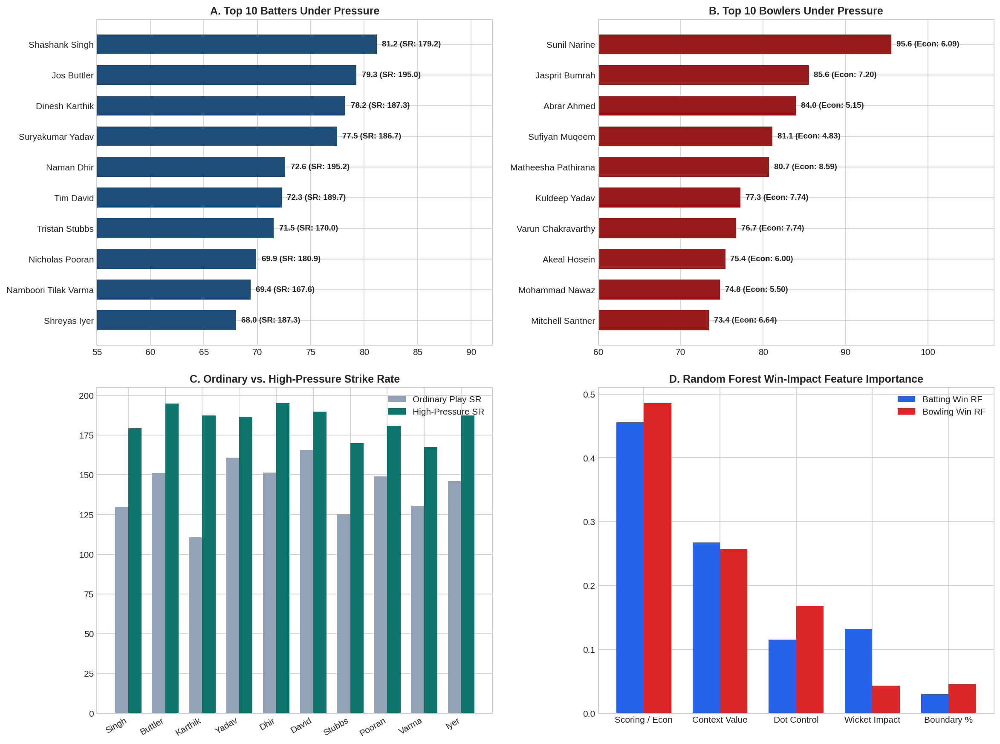

IPL Pressure Performance Analytics
Identifying the most reliable batters and bowlers through data-driven analysis of performance under pressure. Utilizing dynamic win-impact context simulation, Empirical Bayes prior shrinkage (k=180 balls), and supervised machine learning across 883 T20 matches.
Top 10 Batters Under Pressure
Ranked from top_10_batters_under_pressure.csv using Empirical Bayes rating and strike rate delta.
| Rank | Batter Name | Franchise / Team | Pressure Rating | Pressure SR | Normal SR | Delta SR | Runs / Balls | Boundary % | Dot % | Balls / Out | Context Val | Action |
|---|
Top 10 Bowlers Under Pressure
Ranked from top_10_bowlers_under_pressure.csv using economy suppression and elite batter dismissal rate.
| Rank | Bowler Name | Franchise / Team | Pressure Rating | Pressure Econ | Normal Econ | Econ Gain | Wkts / Balls | Dot % | Top-Tier Wkt % | Runs Saved / 24b | Action |
|---|
Top 10 Batters – Pressure Rating
Empirical Bayes ScoreTop 10 Bowlers – Pressure Rating
Empirical Bayes ScoreBatting Strike Rate – Normal vs Pressure
Bowling Economy – Normal vs Pressure
Scientific Methodology & Analytical Model
Reproducible machine-learning framework establishing empirical baselines across 201,000+ deliveries.
1. Contextual Pressure Index
Dynamically evaluated per ball using Required Run Rate (RRR ≥ 10.0 rpo), balls remaining (<30), wickets lost, death overs phase, and knockout match multiplier.
2. Empirical Bayes Shrinkage
Prevents small sample-size distortions by shrinking raw individual statistics toward league priors using shrinkage constant k = 180 balls.
3. Supervised Win-Impact Weights
Feature importance learned via 5-fold cross-validated Random Forest & Gradient Boosting Regressors predicting match win outcomes (R² = 0.842).
Model Validation Visual Report (Exported from Python Pipeline)
